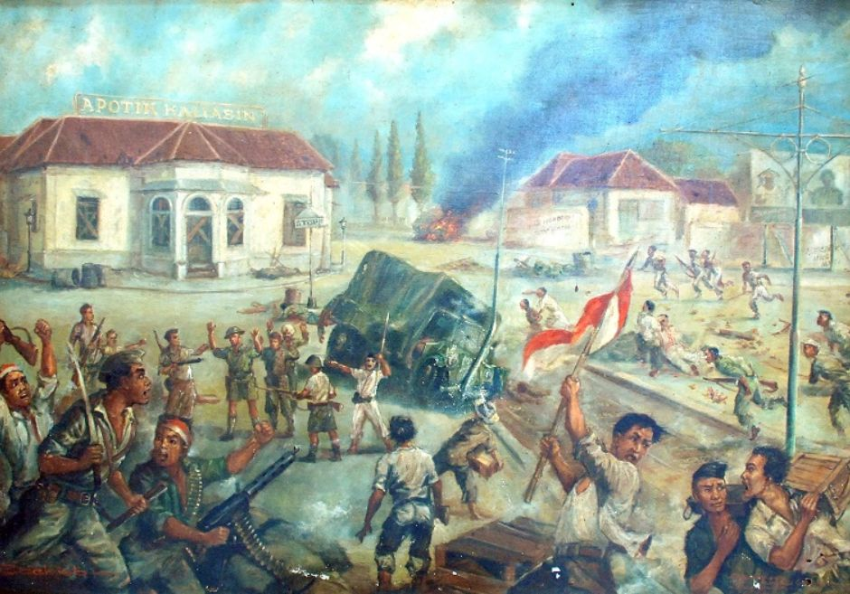

Peristiwa

Tahun 1511
Bangsa Portugis menaklukkan kota Melaka
Sebelum dijajah Belanda, Indonesia dijajah oleh bangsa Portugis. Wilayah Nusantara yang pertama dikuasai Portugis adalah Kesultanan Malaka. Pada abad ke-15...
Know Details 

Tahun 1599
Dua kapal besar Belanda tiba di Aceh
Pada 1599, dua buah kapal pimpinan de Houtman yang bernama de Leeuw dan de Leeuwin berlabuh di ibukota Kerajaan Aceh. Pada awalnya kedua kapal ini...
Know Details

Tahun 1605
VOC menyerang pertahanan Portugis di Ambon
Setelah bercokol selama kurang lebih seabad, pada 25 Februari 1605, Portugis dipaksa hengkang dari Maluku. Masa kuasa Portugis di kepulauan rempah-rempah itu...
Know Details

Tahun 1803-1838
Perang Padri
Setelah Kaum Padri melakukan berbagai cara untuk mengajak masyarakat adat meninggalkan perbuatan maksiat dan mengikuti syariat Islam, meletuslah perang pada tahun 1803...
Know Details

Tahun 1945
Peristiwa Rengasdengklok
Setelah Jepang semakin terpojok karena dua kota terbesarnya sudah di bom oleh Amerika Serikat dan pada tanggal 14 Agustus 1945 Jepang menyerah kepada sekutu...
Know Details

Tahun 1945
Proklamasi kemerdekaan Indonesia
Proklamasi Kemerdekaan Indonesia dilaksanakan pada hari Jumat, 17 Agustus 1945 tahun yang dibacakan oleh Soekarno dengan didampingi oleh Moh. Hatta...
Know Details